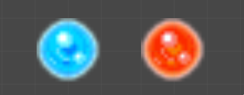
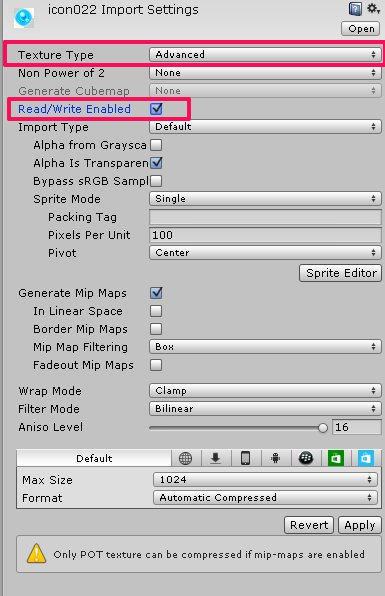
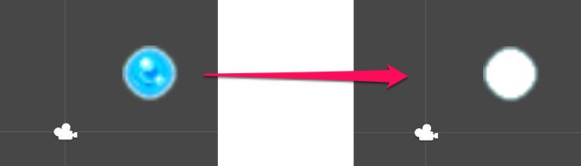
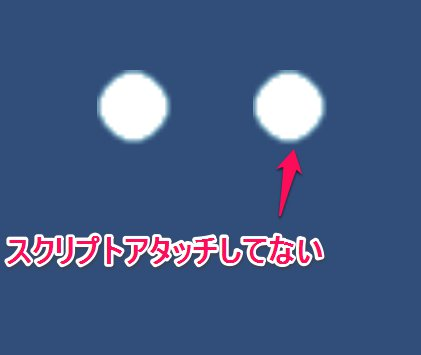

Sprite、Texture の 色相をシフトする
はじめに
Spriteの画像の色相をシフトしたい。下図のように色相をずらせば、一つの画像でいろいろできる。Sprite RendererにデフォルトにあるColorは色を重ねるだけで、色相を変えるわけではない。また、そういった機能も見当たらないので実装してみることとした。
ちなみに英語では hue shift というので、検索するときはそれが有効です。

Sprite内の指定したpixel座標の色を取得する
まずはSprite に対して、指定したpixel座標の色を取得したいと思う。SpriteはTexture2Dを持っているので、以下のようにGetPixelで取得できるはず。
Sprite sprite = GetComponent<SpriteRenderer>().sprite;
Texture2D tex2d = sprite.texture;
print(tex2d.GetPixel(10, 10));
が、ダメ。readable でないとエラーが出る。
「UnityException: Texture ‘xxxx’ is not readable, the texture memory can not be accessed from scripts. You can make the texture readable in the Texture Import Settings.」
どうやらインポートした画像の設定を変更する必要があるようだ。下図のように Texture Type を Advanced に変更すると、Read/Write Enabled が出現するのでこれにチェックする。

これで再度実行すると色が取得できる。
SetPixelで色を変更する
getができたのでsetで色を変更する。試しに透明じゃない場所を白くしてみる。以下のようなコードを実行した。
Sprite sprite = GetComponent<SpriteRenderer>().sprite;
Texture2D tex2d = sprite.texture;
Color[] pixels = tex2d.GetPixels();
for (int i = 0; i < pixels.Length; i++){
if (pixels[i].a == 1) pixels[i] = Color.white; //透明じゃなかったら、白にする
}
tex2d.SetPixels(pixels);
tex2d.Apply();
結果が以下。一見、できているように見える。しかし、これ、実行を解除してもシーンビューで白いままになってしまい、戻らない。一度Unityを立ち上げ直すと戻るが・・・。

さらにこのやり方だと同じSprite画像を持つオブジェクトにも反映されてしまう。どうやら、GlobalにTextureの色を書き換えてしまうようだ。

新しいTexture2Dを作って適用
上記の問題を解決するためには、以下が参考になる。
SetPixel on a sprite texture without changing it globally
新しいTexture2Dを生成してそれを適用した新しいSpriteを作るということだ。SpriteのTexture2Dは置き換えることができないので、SpriteRendererのSpriteを置き換えなければならない。以下のようにソースを修正。
Sprite sprite = GetComponent<SpriteRenderer>().sprite;
Texture2D tex2d = sprite.texture;
Color[] pixels = tex2d.GetPixels();
for (int i = 0; i < pixels.Length; i++){
if (pixels[i].a == 1) pixels[i] = Color.white;
}
Texture2D newTex = (Texture2D)GameObject.Instantiate(tex2d);
newTex.SetPixels(pixels);
newTex.Apply();
GetComponent<SpriteRenderer>().sprite = Sprite.Create(newTex, sprite.rect, new Vector2(0.5f, 0.5f), sprite.pixelsPerUnit);
これでとりあえず上記の問題は解決できた。
色相を変える
あとは色相を変えるだけのはずだ。まずは、RGBからHSLに変換する必要がある。
Color conversionにおいて配布されているHSLColorを使用する。
先のコード内のfor文を以下のように置き換える。
for (int i = 0; i < pixels.Length; i++){
HSLColor hsl = HSLColor.FromRGBA(pixels[i]);
hsl.h += 180; //180度、色相をずらす.
pixels[i] = hsl.ToRGBA();
}
これで、冒頭で示した以下の画像が出力できたのであった。
終わりに
SpriteとTexture2Dを色相をシフトするたびに作りなおしているので、コストかかる行為かも。
シェーダーで実装したバージョンは以下。
ShaderでSpriteの色相をシフトする
確認バージョン
Unity 4.6